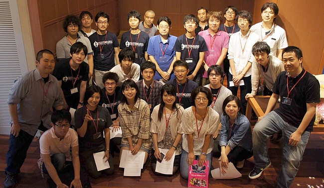
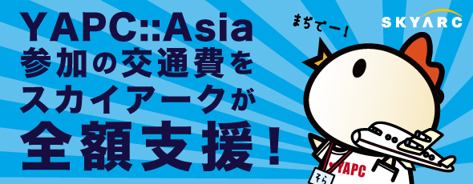
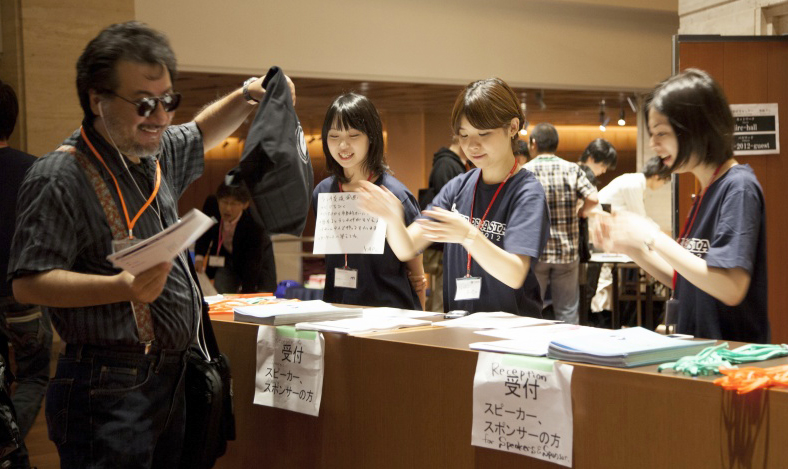

Date 2013.06.18 By Yusuke Kushii

(English Follows Japanese)
こんにちは、櫛井です。
YAPC::Asia Tokyo 2013 Early Bird Tickets On Sale ! 枚数限定の先行販売チケットがお得です
でお知らせしていました先行発売分が売り切れた後の通常チケットですが
想定していたよりも早く先行発売分がなくなったため（ありがとうございます！）
予定を早めて本日より通常チケットの発売を開始いたします。
本日より発売となるチケットは以下となります。
・Tシャツ付き2日通し券 5000円
・Tシャツ付き1日券 4000円
・学生用チケット 無料
チケットの購入はこちらから
▼YAPC::Asia Tokyo 2013 | PeaTiX
また、チケット購入ページにも詳細を載せておりますが、本編トークのスピーカーと
ボランティアスタッフはチケットを購入する必要はありません。
（LTのスピーカーはチケットが必要です）
チケットの購入は昨年同様、オンライン購入(PeaTiX)のみとなっております。
繰り返しますが、学生の方は今年も無料です！事前申し込みが必要です
ので先ほどのチケット購入ページから「学生チケット（無料）」を選択し、お申し込みください。
※学生チケットは、受付にて学生証をご提示いただきます
また、今年は例年よりも１つ多い４つの会場にて開催いたします。
純粋に４つのトラックがあるというわけではなく、今年は１つの会場を使い
「Perl入学式 in YAPC::Asia 2013」という「初心者を対象としたPerlのワークショップ」を
開催予定です。当日行われるカリキュラムは基礎的なものになるか、応用編になるかは
参加予定者の意見で決まるとのことですので、Perl入学式の公式サイトでチェックしてみてください。
▼Perl入学式 in YAPC::Asia 2013
何か不明な点などあれば #yapcasia を付けて Twitter に投稿していただくか
運営を担当している @941 または @lestrrat 宛に投稿してください。
それが一番早いです :)
---
We're pleased to announce that regular tickets for YAPC::Asia Tokyo 2013 is now on sale! Regular two day passes are 5000 JPY. Student passes are free! One-day passes are also available for 4000JPY.
You can purchase the ticket here:
▼YAPC::Asia Tokyo 2013(English Page) | PeaTiX
This year we're also going to collaborate with Perl入学式 (literally, "Perl Entrance"), which is an on-going course targeted for Perl beginners. If you want to get some hands-on experience for intro level Perl, please check them out!
Details will be posted here:
▼Perl入学式 in YAPC::Asia 2013
Date 2013.06.13 By Yusuke Kushii
YAPC::Asia Tokyo 2013開催に合わせて、
昨年限定販売され話題となったmiyagawaデカールがカラーバージョンとなり
2013年モデルとして発売決定！
昨年のバージョンを実際につけてみたイメージはこちら
イメージとしてはこういった形です。カラーになりました。
また、詳細はまだ秘密ですが予約限定としてシークレットデカールも付いてきます。
おや、どこかで見たことのあるこのサスペンダーは...？
※画像はモノクロですが実際のデカールは肌の部分がカラーとなっています
デカールのサイズはMacBookAir 11インチ、13インチに最適な
サイズとなっています。お値段は２枚で1500円！安い！
デカールは会場手渡しとなりますのでご注意ください。
お申込みはこちらからどうぞ
→miyagawaデカール 2013年モデル + 完全限定生産なシークレット版 の２枚セット
miyagawaデカール2013年モデルは当日販売も若干行う予定ですが
シークレットデカールは完全予約生産分限定となっておりますので
手に入れるチャンスはいまだけ！是非ご予約ください。
なお、収益はYAPC::Asia tokyo 2013の運営に使用されます
100セット限定！と書きましたが、人気が爆発してしまったら追加分を
用意するかも知れません。
Date 2013.06.11 By monmon
2013年7月3日追記
こちら人数に達したので締め切らせていただきました！
沢山のご応募ありがとうございました！
ボランティア希望の方達には別途、メールを送ります！
追記終わり

（refs. YAPC::Asia 2012 をやってきた！ ので写真で紹介 - 941::blog）
こんにちは！今年スタッフ4年目のくまがいです！monmonといいます！
ボランティアスタッフの募集準備が整いましたのでお知らせします！
さっそくですが「もちろん手伝うよー！」「早く参加したくてたまらない！」という方は今すぐこちらのフォームからご応募ください！
去年のYAPC::Asiaの様子はこちら。スタッフの記事もあり運営側の様子もわかると思うので「どんな仕事するの？」な方は見てみてください。
- いろんな会社のいろんな人の話を聞けるのはやっぱり楽しい！YAPC::Asia Tokyo 2012に参加して来た！
- YAPC::Asia 2012 ブログまとめ | YAPC::Asia Tokyo 2012
個人的には失敗もありつつLINEでリアルタイムに動いたりするのがとても楽しかったです！
3年目でも失敗はあるので今年初めて参加したい方も不安がらずに！
最後にQ&A！心配ごとはここで解決！
■Q&A
Q.何人くらいの募集なの？
A.30人くらいを予定しています
Q.選考基準とかある？
A.特にありません、基本的に先着順です
Q.YAPCの開催っていつだっけ？
A.以下の日程です
9月19日(木) 前夜祭(予定)
9月20日(金) 一日目
9月21日(土) 二日目
Q.今年はどこなの？
A.慶應大学の日吉キャンパスの協生館という所です
Q.１日だけとか、前夜祭だけ、とかでいいならやりたいんだけど
A.大歓迎ですが多めに参加できる方を優先します
Q.力仕事とか無理なんだけど
A.重いものを持たないお手伝いも沢山あります
Q.ボランティアで参加するメリットはなんですか？
A.チケット代が無料になり、一歩踏み込んだ形でお祭りに参加できます！
あとお昼ごはんくらいはご馳走します
Q.どうしても聞きたいトラックとかあったら抜けてもいい？
A.交代要員が必ずいるので調整してもらえればOKです
Q.学生なんですが可能ですか？
A.もちろん可能です。ちなみに今年も学生は参加費無料です！
Q.初めての参加なので不安です
A.経験者の方に助けてもらいながら一緒に盛り上げて行きましょう！
Q.キックオフの飲み会あるみたいだけど、お酒飲めません
A.その分ご飯を食べれば大丈夫！
Q.コミュニケーション苦手なんだけど...
A.大丈夫！
というわけで、ご応募は以下のフォームから！お待ちしております！
（例年スタッフで参加していて「今年もー！」という方も改めてこちらからご応募お願いします！）
スタッフ説明会（という名の飲み会）を7/17（水）に開催しますので予定を合わせられる人はぜひぜひご参加ください！
今年も初企画満載のYAPC::Asiaなので一緒に作り上げましょう！どうぞグイグイ参加して来てください！前ノリな感じで！
Date 2013.06.10 By Yusuke Kushii
こんにちは、櫛井です。
株式会社スカイアーク様のご厚意で今年も実施決定です！やったー！

遠方からの参加者支援制度とは
「YAPC参加したいけど遠方からだと旅費が厳しい...」
そういった方を対象に、遠方からの参加者に旅費を全額負担する
という夢のような制度です。夢ではありません。
■申し込み対象
関東圏より遠方にお住まいの18歳以上の学生または社会人または
未就労の方。（高校生は対象外となります）
■募集人数
5名を予定
■参加に必要なもの
以下３点が必須となります
・YAPCに参加したい！という熱い気持ち
・クラウド技術に関連したYAPC::Asiaでのトーク申し込み（申し込みはこちら！）。
・感想などのBlogエントリを書く（詳細は後日改めてご連絡します）
昨年までは「遠方からの参加者トーク枠」を設けていましたが、今年は
この制度を支援いただいている株式会社スカイアーク様がクラウド系ビジネスに
力を入れていらっしゃるということと、色々なトークが増えるというのが
YAPC運営側としても嬉しいということで「クラウドに関連したトーク申し込み」
という形にさせていただいています。
トークの申し込みをした後、こちらの応募フォームよりお申込みください。
■申し込み期限
トークの応募は7月12日（金）まで、本制度への応募は7月31日（水）までとします
■制度の当選結果
8月中旬を予定しています
■質疑応答
Q.過去にこの制度を利用させてもらったけど応募していい？
A.もちろんOKです。
Q.関東圏と言っても広いんだけど？
A.東京都・埼玉県・千葉県・神奈川県の方は頑張って自力でお越しください。
それ以外の地域にお住まいの方は今回の制度の申し込みの対象となります。
※北は北海道、南は波照間島までOKです
Q.アメリカ在住なんだけど対象？
A.すいません、日本国内限定です
Q.クラウド系の話って具体的にはどの程度？
A.活用例、利用してこんなことをやってみた、なんでも結構です。
応募の間口を広げるため、敢えて「クラウド」という曖昧なキーワードを使用しております！
Q.人前でトークしたこと無いんだけど...
A.人間為せば為る！
Q.旅費はありがたいけど宿はどうすればいいの？
A.ご自分で手配をお願いいたします。
ある程度安い宿であればご紹介いたします。
Q.当日のチケットはどうすればいいの？
A.YAPCのスピーカーですのでチケットは不要となります。
また、この制度の当落に関わらず、今年もYAPC::Asia は学生の参加が無料です。
以上です、遠方からの参加を検討されている方は是非ご応募ください！
今回で３回目となる「遠方からの参加者支援制度」ですが、この制度は
毎年YAPC::Asiaの開催にあたり多大なるご協力をいただいている
株式会社スカイアーク様の協賛により実現しております。
北海道は帯広に本社があるスカイアーク様の「地域の雇用を活性化したい！」
という熱い情熱のもとご支援いただくことになりました。ありがとうございます！
YAPC参加したいけど遠方だしなぁ と遠い目をしている友人などに
是非この制度を紹介してくださいませ！
Date 2013.06.04 By Yusuke Kushii
(English announcement follows Japanese)
こんにちは、櫛井です。
一般販売に先駆けて、本日より通常5000円のTシャツ付き2日通し券が4000円で購入できる
YAPC::Asia Tokyo 2013先行販売チケットを発売いたします！お早めにお買い求めください！
(先行チケットを手に入れられなかった方は7月よりTシャツ付き2日通し券を5000円にて販売予定です）
また、2日通し券同時に学生用チケットも先行販売いたします。
YAPCにはIT業界の様々なエンジニア達が集います。今年は一部で就職支援イベントも
行う予定なので是非いらしてください。学生の方は今年も無料です！

チケットの購入はこちらから
▼YAPC::Asia Tokyo 2013 | PeaTiX
また、チケット購入ページにも詳細を載せておりますが、本編トークのスピーカーと
ボランティアスタッフはチケットを購入する必要はありません。
（LTのスピーカーはチケットが必要です）
チケットの購入は昨年同様、オンライン購入(PeaTiX)のみとなっております。
繰り返しますが、学生の方は今年も無料です！事前申し込みが必要です
ので先ほどのチケット購入ページから「学生チケット（無料）」を選択し、お申し込みください。
※学生チケットは、受付にて学生証をご提示いただきます
何か不明な点などあれば #yapcasia を付けて Twitter に投稿していただくか
運営を担当している @941 または @lestrrat 宛に投稿してください。
それが一番早いです :)
===
Early bird tickets for YAPC::Asia Tokyo 2013 are now available! Early bird tickets are available for 2-day and student passes. You get 1000JPY discount if you buy the 2-day pass by July! Students are free :)
Speakers for full-length talks and volunteer staff do not need to purchase tickets (if you're only presenting Lightning Talk(s), you need to purchase a ticket)
YAPC::Asia Tokyo 2013(English Page) | PeaTiX
This year we're only selling tickets online through PeaTix.
Student tickets are free, but you need to register by purchasing a free ticket. You need to show proof that you're a student upon check-in at the venue.